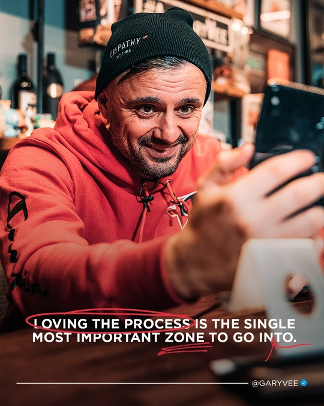

Gary Vaynerchuck
Let the game begins!

Just - enjoy the Process!
Here's a time line of Gary Vaynerchuk's life:
- 1975 November 14 Gary Vaynerchuk (born Gennady Vaynerchuk; November 14, 1975; Belarusian: Генадзь Вайнярчук, Russian: Геннадий Вайнерчук) is a Belarusian-American entrepreneur, New York Times bestselling author, speaker, and Internet personality. He is a co-founder of Resy and Empathy Wines. First known as a wine critic who expanded his family's wine business, Vaynerchuk is now more known for his work in digital marketing and social media as the chairman of New York-based communications company, VaynerX, and as CEO of VaynerX subsidiary, VaynerMedia.
- 1978 Vaynerchuk was born in Babruysk in the Soviet Union (today part of Belarus), and immigrated to the United States in 1978 at the age of three. He is of Jewish descent. Growing up, Vaynerchuk lived in New York City's Queens borough and later moved to Edison, New Jersey. At age 14, he joined his family's retail-wine business. After his family moved, he graduated from North Hunterdon High School. In 1998, Vaynerchuk graduated with a bachelor's degree from Mount Ida College in Newton, Massachusetts.
- 1998 After graduating from college in 1998, Vaynerchuk assumed day-to-day control of his father's Springfield, New Jersey store, Shopper's Discount Liquors. Gary renamed the store to Wine Library, launched sales online and in 2006 started Wine Library TV, a daily webcast on YouTube covering wine.
- 2006 February Vaynerchuk hosted a video blog on YouTube called Wine Library TV (WLTV or The Thunder Show) from 2006 to 2011, featuring wine reviews, tastings, and wine advice. The show debuted in February 2006 and was produced daily at the Wine Library store in Springfield, New Jersey. At 1,000 episodes in 2011 Vaynerchuk retired the show and replaced it with a video podcast, The Daily Grape. In August 2011, Vaynerchuk announced on Daily Grape that he was retiring from wine video blogging.
- 2009 In 2009, Gary, along with his brother AJ Vaynerchuk, founded VaynerMedia, a social media–focused digital agency. The company provides social media and strategy services to Fortune 500 companies such as General Electric, Anheuser-Busch, Mondelez International and PepsiCo. In 2015, VaynerMedia was named one of Ad Age's A-List agencies. With 600 employees in 2016, VaynerMedia grossed $100 million in revenue. The company also partnered with Vimeo to connect brands and filmmakers for digital content.
- 2009 Through e-commerce and pricing strategies, Vaynerchuk grew the business from $3 million a year to $60 million a year by 2003. In August 2011, Vaynerchuk announced that he would be stepping away from the wine business to build VaynerMedia, a digital ad agency he co-founded with his brother in 2009.
- 2010 In 2010, Vaynerchuk launched Wine & Web on Sirius XM satellite radio. The show's programming paired new wine tastings in a "Wine of the Week" segment with coverage of gadgets, trends and startups in its "Web of the Week" segment.
- 2014 In 2014, Vaynerchuk launched The #AskGaryVee Show on YouTube with his personal content production team. In the show, Vaynerchuk canvases questions from Twitter and Instagram and responds in an extemporaneous manner. Show questions, most commonly on entrepreneurship, family and business topics, are pre-screened by the production team, but remain unseen by Vaynerchuk until each show's taping. The AskGaryVee Show inspired Vaynerchuk's fourth book, AskGaryVee: One Entrepreneur's Take on Leadership, Social Media, and Self-Awareness.
- 2015 DailyVee is a daily, video-documentary series on YouTube that chronicles Vaynerchuk's life as a businessman. Started in 2015, Vaynerchuk records live, interviewing others and broadcasting investor meetings and strategy sessions at VaynerMedia. In the series Vaynerchuk implements social media strategies, especially through Snapchat and Instagram, to demonstrate social-media marketing techniques.
- 2017 In 2017, The Wall Street Journal reported that Vaynerchuk formed The Gallery, later named Gallery Media Group, a VaynerX subsidiary company that houses PureWow, following its acquisition by Vaynerchuk and RSE Ventures, male-oriented news outlet ONE37pm.com, and other media properties.
- 2017 February In February 2017, Apple and Propagate announced the launch of Planet of the Apps, a reality television series with a recurring cast that includes Vaynerchuk, will.i.am and Gwyneth Paltrow. Described as Shark Tank meets American Idol, in the show Vaynerchuk and team evaluate pitches from app developers vying for investment. The series cast joined Product Hunt for a tour to Austin, San Francisco, Los Angeles and New York.
- 2019 Vaynerchuk co-founded restaurant-reservation app, Resy, which was acquired by American Express in 2019. He is also a co-founder of winery Empathy Wines, which was acquired by Constellation Brands in 2020.
- 2020 In 2020, Vaynerchuk sold his direct to consumer Empathy Wines brand to Constellation.
“Skills are cheap. Passion is priceless.” – Gary Vaynerchuk